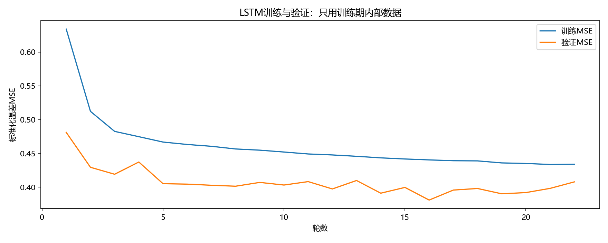

BEIJING WEATHER · 2013—2017
看懂天气变化，预测下一小时。
北京官园站天气分析与短期气温预测 · LSTM与简单模型同条件比较
连续逐小时记录
35,064
2013-03 — 2017-02
LSTM平均绝对误差
℃
同一测试期公平比较
沿用当前气温 · 平均误差
℃
“下一小时与现在一样”的简单对照
相比简单对照 · 误差降低
不以R²冒充预测准确率
模型是否比“沿用当前气温”更好？
实际气温LSTM线性回归沿用前1小时
每个时刻只使用此前已知天气，预测下一小时；不是在起点一次预测未来数月。真实缺测点保留断线。
同条件检验
| 方法 | MAE（℃） | RMSE（℃） | R² |
|---|
气温本身连续，简单对照也会有很高的R²。因此重点比较误差。
LSTM与简单方法同场比较
LSTM是实际训练的循环神经网络；保留线性回归和简单对照，不平滑真实曲线或删除难预测的峰谷。
LSTM怎样训练？

曲线仅来自训练期内部。验证确定轮数后，在完整训练期重训；最后测试期不参与早停或选轮数。
01 / EXPLORE THE WEATHER
四年记录，观察季节与变化。
从月度温度到逐小时预测，图表都由实际数据生成。
数据清洗记录
原始文件保留。目标气温缺测不填补、不用于评价；作为输入的过去记录仅向前沿用最多3小时，剩余辅助输入用训练子集的中位数处理。
02 / NEXT-HOUR FORECAST
用过去24小时，让LSTM预测下一小时。
例如预测14点：最近已知气温来自13点，变化趋势参考12点，昨日同小时来自前一天14点。
LSTM：先预测，再揭晓实际值
选择一个历史时刻，模型只读取此前24小时气温；真实值在点击揭晓后展示。
LSTM下一小时预测
—
历史实际值
尚未揭晓
展开线性回归对照：手动修改三个气温输入
设置已知条件
普通线性回归 / 下一小时
—℃
沿用前1小时气温
模型预计变化
历史场景演示，不是实时天气预报服务。
03 / LSTM METHOD
读取一段历史，学习温度如何变化。
单层LSTM、32个隐藏单元、24小时窗口，输出下一小时温差。
01
过去24小时
窗口只到目标前1小时，整理气温、窗口内温差及已知小时周期。
02
学习序列变化
LSTM的门控制保留或更新历史信息，输出最后一步的隐藏状态。
03
估计下一小时温差
线性输出层给出温差，再加到前1小时气温上，得到预测温度。
04
公平检验
LSTM、线性回归、沿用当前温度使用同一批有效测试时刻。
验证选轮数，测试只用于检验
标准化只使用拟合段统计量；缺测只向前沿用最多3小时，窗口仍缺则不预测。真实目标不填补。
如何讲清楚LSTM？
“它不像线性回归只看几个整理后的数字，而是依次读取过去24小时。门控机制保留有用历史，最后估计下一小时会升温还是降温、变化多少。”
单层网络保持适中规模。是否优于简单模型以真实测试误差为准；R²不是准确率，不代表能一次预测未来数月。